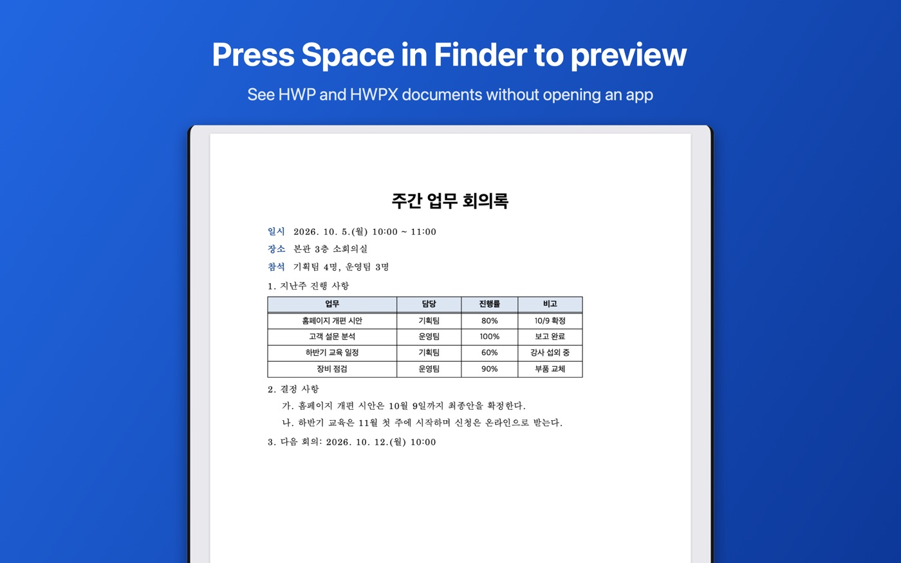
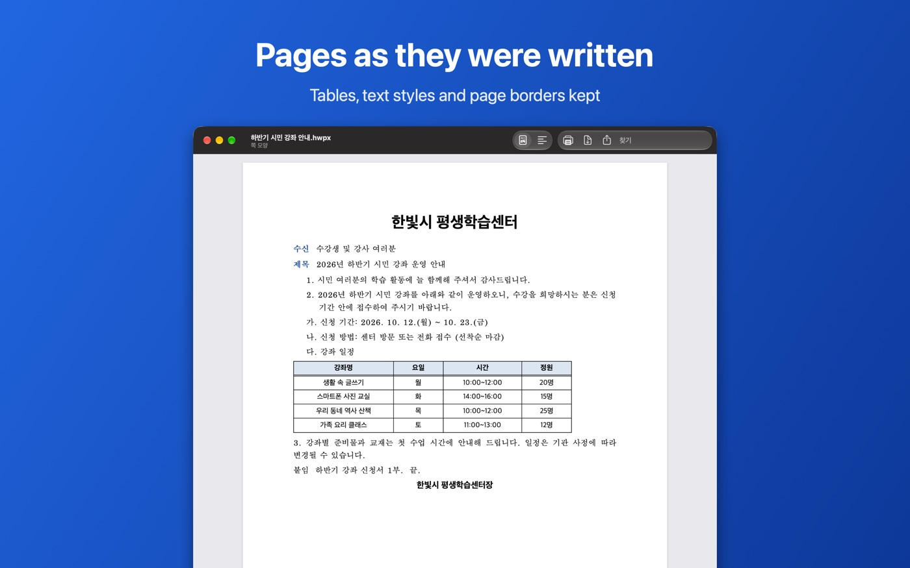

HWP and HWPX on iPad and Mac
One app for iPhone, iPad and Mac
HWP Viewer for iPhone, iPad and Mac comes from the same App Store listing. Viewing is free, and the lifetime unlock works on all devices with the same Apple Account (use “구입 복원”, restore, on the other devices).
Get HWP Viewer on the App Store
Requires iPadOS 18 or macOS 15 for viewing; converting PDFs and photos into Hangul files needs iPadOS 26 or macOS 26.
The app's interface is in Korean; the Korean menu names are given below in quotes.
iPad
- Open attachments with the share button → “HWP 뷰어”, or files in Files from the app's Browse tab. Tapping a Hangul file in Files shows a preview.
- The “더 보기” (…) menu has search, fit to screen, PDF export, page images and read aloud.
- As on iPhone, you can fill in and sign forms and convert PDFs and photos into Hangul files.
Mac
Open
Use File › Open… in HWP Viewer. In Finder, select a document and press the space bar to see it in Quick Look without opening the app.

View and search
- Switch between page view (쪽 모양) and fit to window (화면에 맞춤) in the toolbar.
- ⌘F searches; Return goes to the next result.
- ⌘+ / ⌘- zoom, ⌘0 returns to actual size.

PDF, print, share
The toolbar has “PDF로 내보내기” (export PDF), “프린트” (print) and “원본 파일 공유” (share the original).
PDFs and photos to Hangul (macOS 26)
File › “PDF·사진을 한글 파일로 변환…” (⇧⌘O): drop a PDF or image on the window; the HWPX file is saved to Downloads and “뷰어에서 열기” opens it. Three free conversions, then the lifetime unlock.
Not on the Mac yet
The current Mac version does not have form filling, signing or viewing of Word, Excel and PDF files; these work on iPhone and iPad.
HWP vs HWPX
Both are Hangul word-processor formats: HWP is the older one and HWPX is what newer versions of Hangul save. HWP Viewer opens both, including distribution (read-only) documents from public institutions. Password-protected documents cannot be opened.